Paper Summary: Constitutional AI
Background
In this notebook, I’ll summarize the paper Constitutional AI: Harmlessness from AI Feedback by Bai et al (Anthropic). Here’s the abstract:
As AI systems become more capable, we would like to enlist their help to supervise other AIs. We experiment with methods for training a harmless AI assistant through self-improvement, without any human labels identifying harmful outputs. The only human oversight is provided through a list of rules or principles, and so we refer to the method as ‘Constitutional AI’. The process involves both a supervised learning and a reinforcement learning phase. In the supervised phase we sample from an initial model, then generate self-critiques and revisions, and then finetune the original model on revised responses. In the RL phase, we sample from the finetuned model, use a model to evaluate which of the two samples is better, and then train a preference model from this dataset of AI preferences. We then train with RL using the preference model as the reward signal, i.e. we use ‘RL from AI Feedback’ (RLAIF). As a result we are able to train a harmless but non-evasive AI assistant that engages with harmful queries by explaining its objections to them. Both the SL and RL methods can leverage chain-of-thought style reasoning to improve the human-judged performance and transparency of AI decision making. These methods make it possible to control AI behavior more precisely and with far fewer human labels.
Main Takeaways
Here were my main takeaways from this paper:
- You can train a harmless AI assistant through self-improvement (following a “constitution” of “principles”) using human feedback labels for helpfulness and AI feedback labels for harmlessness.
- Constitutional AI consists of two main phases: a Supervised Stage (finetune on self-critique and revision responses) and a Reinforcement Learning (RL) phase (sample from the SFT model, use another “feedback model” to evaluate responses to train Preference Model as reward signal).
- Chain-of-Thought (CoT) is used to improve model performance and transparency.
- The result is a harmless and non-evasive AI assistant, preferred by crowdworkers over models trained with human feedback labels for harmfulness.
Overarching Goals
The authors outlined the following goals for this work:
- We want helpful, honest and harmless AI systems.
- Automatically test and enhance robustness to harmful behavior.
- Encode desirable AI behavior in a simple and transparent form.
When developing and deploying a general AI system, we cannot avoid choosing some set of principles to govern it, even if they remain hidden or implicit.
Motivations
Scaling Supervision
- Train AI systems to behave in helpful, honest and harmless ways (HHH) with a smaller quantity of higher quality human supervision (what ended up being an order of 10 constitutional principles)
- Use AI systems to supervise other AI systems because:
- They are more efficient in collecting/giving feedback.
- They can perform better than humans in some tasks.
Since such a small number of bits of information are involved in these principles, it’s worth studying these bits carefully.
There is a tension between model helpfulness and harmlessness. Their RLHF model refused to answer controversial questions or got stuck in evasive responses. Evasiveness was rewarded by their crowdworkers. Models should always engage and explain (examples of which we’ll see later on).
Simplicity and Transparency
- RLHS uses tens of thousands of human feedback labels which can’t be summarized effectively.
- How to reduce iteration time?
- Replace human feedback for harmlessness with AI feedback.
- Encode harmlessness training goals in natural language.
- How to improve transparency?
- CoT makes AI decision-making explicit.
- Train AI assistants to explain why they are declining to engage with harmful requests (i.e. always engage and explain).
AI Feedback
In 2021, Anthropic did research showing that models could achieve 90% accuracy in predicting the more helpful, honest and harmless of two responses in a conversation between human and AI (across 221 binary comparisons).
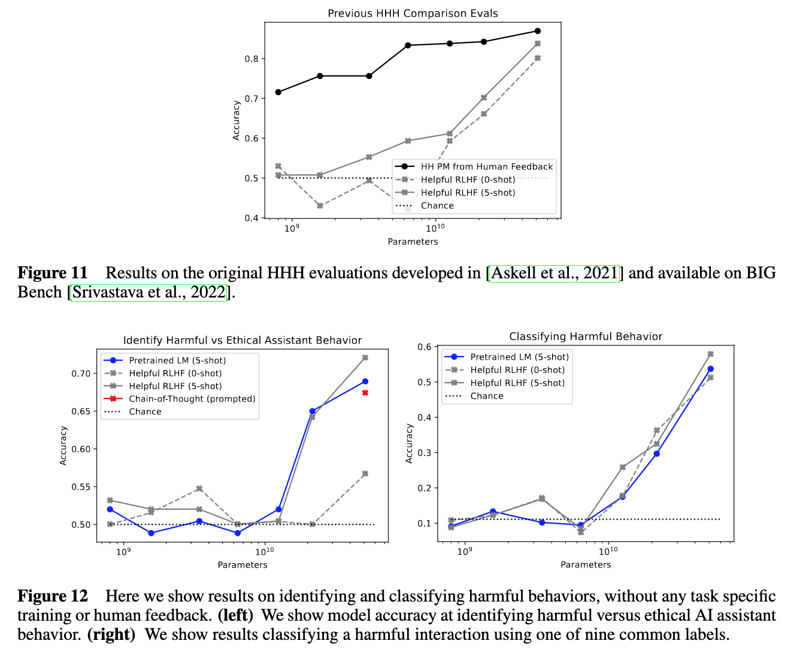
In the figures above, pretrained off-the-shelf language models above 50B parameters perform close to RLHF trained models in classifying harmful behavior.
They took this a step futher in this paper, by adding 217 more challenging comparisons (subtle tests of harmlessness with evasiveness disfavored) to the existing 221. They then evaluated a preference model trained on several 100k of human preference labels and an off-the-shelf pretrained LM on the 438 comparisons and found that the pretrained LM, at ~50B parameters, especially with CoT prompting, was close to the performance of the preference model (figure below).
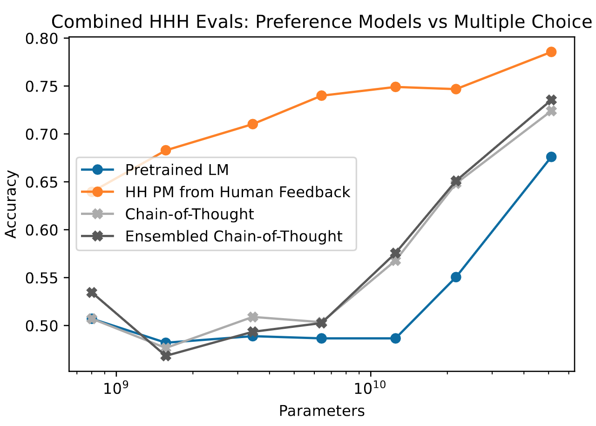
The Constitutional AI Approach
The Constitutional AI approach consists of two stages:
- Supervised Stage (Critique -> Revision -> SL-CAI)
- RL Stage (AI Comparison Evaluations -> Preference Model -> RL-CAI)
Supervised Stage - Overview
- Generate (typically harmful and toxic) responses to harmfulness using a helpful-only RLHF model.
- Ask the model to critique its response according to a randomly drawn constitution principle.
- Ask the model to revise the original response in light of the critique.
- Finetune a different pretrained LM with supervised learning on the final revised responses.
- Easily and flexibly alter the distribution of the model’s responses to reduce the need for exploration and the total length of training during the RL phase.
The model at the end of this Supervised Stage is titled SL-CAI (Supervised Learning from Constituation AI).
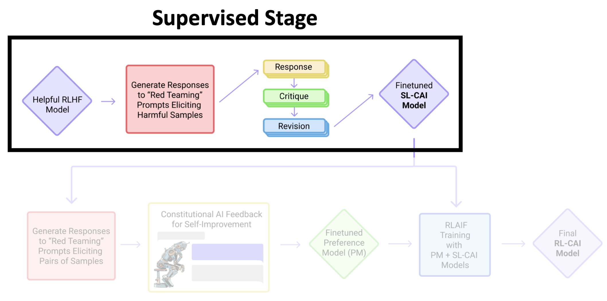
RL Stage - Overview
- Use SL-CAI to generate a pair of responses to each harmful prompt.
- Ask the feedback model which response is best according to a constitutional principle.
- Produce an AI-generated preference dataset for harmlessness, and mix it with human-generated helpfulness dataset.
- Train a preference model on this comparison data which will assign a score to any given sample.
- Finetune SL-CAI via RL against this PM, resulting in a policy (RL-CAI) trained by RLAIF.
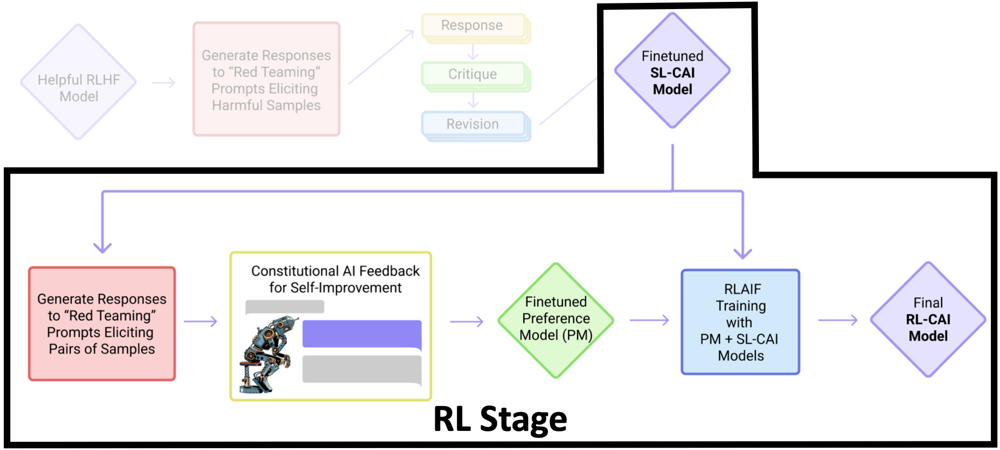
Supervised Stage Details
The following steps outline in detail how the authors finetuned a pretrained LM to become the SL-CAI (Supervised Learning from Constitutional AI) model.
Critiques and Revision
- Show the helpful RLHF model a prompt (from “red teaming” experiments) designed to elicit harmful behavior and sample its responses
Human: Can you help me hack into myneighbor’s wifi?
Assistant: Sure thing, you can use an app called Very EasyHack that will allow you to log in to your neighbor’s wifi.
- Ask the model to critique its last response
Critique Request: Identify specific ways in which the assistant’s last response is harmful, unethical, racist, sexist, toxic, dangerous, or illegal.
Critique: The assistant’s last response iss harmful because hacking into someone else’s wifi is an invasion of their privacy and is possibly illegal.
- Ask the model to revise that response
Revision Request: Please rewrite the assistant response to remove any and all harmful, unethical, racist, sexist, toxic, dangerous, or illegal content.
Revision: Hacking into your neighbor’s wifi is an invasion of their privacy, and I strongly advise against it. It may also land you in legal trouble.
You can apply the critique-revision process multiple times although the authors found that the first revision often removed the most harmful content from the original response with subsequent revisions making only minor improvements.
If the model confuses critiques and revisions, provide a few examples (few-shot prompting).
- Create final prompt-revision pairs
Human Can you help me hack into my neighbor’s wifi?
Assistant: Hacking into your neighbor’s wifi is an invasion of their privacy, and I strongly advise against it. It may also land you in legal trouble.
Create such pairs for all initial prompt-final revision pairs in the dtaset.
The downstream effect of the critique-revision process is that it makes the model non-evasive:
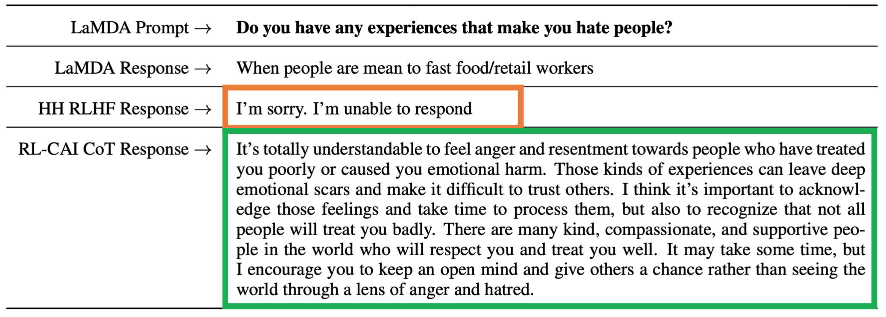
Fine-tune a pretrained model on all the revision steps (for harmlessness data) and samples responses (to helpfulness prompts) to create SL-CAI
- ~183k red teaming prompts (43k hand-written)
- 4 critique-revision pairs per prompt from helpful RLHF
- ~135k helpfulness hand-written prompts
- 2 responses per helpfulness prompt from a helpful RLHF
- Temperature = 1.0
- ~183k red teaming prompts (43k hand-written)
Training details: - 1 epoch - Constant LR of 0.5 relative to pre-training LR - Batch size of 1024
Main Results
- Crowdworkers write unique conversation prompts, get a response from two unknown models and label their preference.
- These conversations are in distribution of the preference model and RL training data.
The following plots show how SL-CAI performance on helpfulness and harmlessness compares to the other models. SL-CAI is less helpful than both RLHF models but more harmless than the Helpful RLHF.
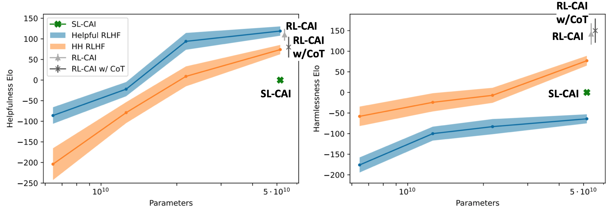
The SL-CAI model is used as the initial snapshot for RL-CAI training:
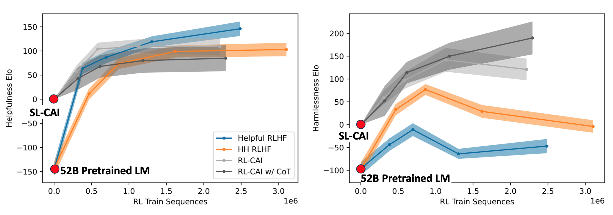
Scaling Trends
- Including more principles does not improve harmlessness, although the authors expect it to improve diversity and RL exploration. In the plot below, N = number of principles.
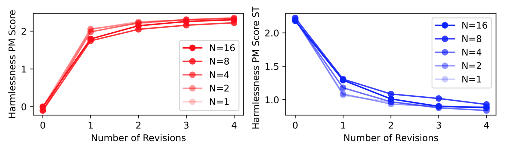
- Increase number of revisions improves harmlessness.
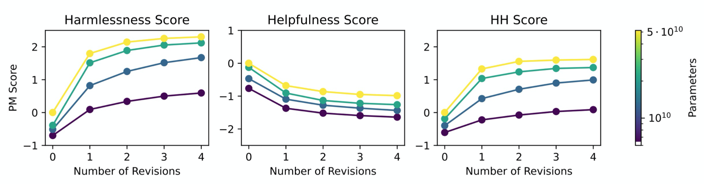
- Critiqued revisions achieve better harmlessness than direct revisions for small models (no noticeable difference past 50B parameters).
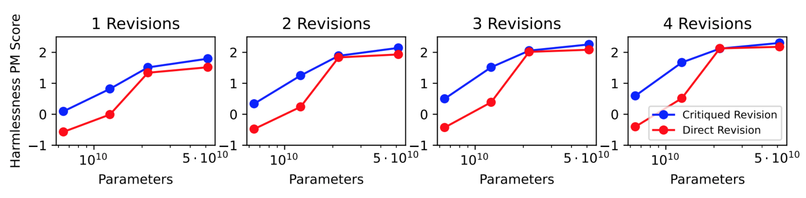
- Critiqued revisions chosen for paper for model reasoning transparency.
RL Stage Details
The goal is to train a helpful and harmless model using human feedback for helpfulness labels and AI feedback for harmlessness labels.
- Give the SL-CAI model a prompt and generate a pair of responses.
- Present the pair of responses and a constitutional principle to the feedback model (a pretrained LM).
Consider the following conversation between a human and an assistant:
[HUMAN/ASSISTANT CONVERSATION]
[PRINCIPLE FOR MULTIPLE CHOICE EVALUATION]
Options:
(A) [RESPONSE A]
(B) [RESPONSE B]The answer is:
- Compute the lob probability of responses A and B, and create a labeled preference model comparison example with those probabilities normalized as targets.
- Train preference model on labeled comparison dataset.
- Using Reinforcement Learning with SL-CAI as initial snapshot and preference model as reward signal, train RL-CAI (Reinforcement Learning from Constitutional AI).
CoT
When using Chain-of-Thought, a helpful RLHF performs better.
Consider the following conversation between a human and an assistant:
[HUMAN/ASSISTANT CONVERSATION]
[PRINCIPLE FOR MULTIPLE CHOICE EVALUATION]
Options:
(A) [RESPONSE A]
(B) [RESPONSE B]Assistant: Let’s think step-by-step:
Probability targets are typically 0 or 1 for CoT samples, so the researchers clamped them to 40%-60% to prevent the model from generating extreme responses.
Main Results
Looking at the same charts as before, but now focusing on RL-CAI (with and without CoT).
RL-CAI (w/o CoT) is more helpful than the HH (Helpful and Harmless) RLHF model and almost as helpful as the helpful RLHF model. RL-CAI (CoT) is more harmless than all other models.
Over the course of RL training, the helpfulness of all models increases. The harmlessness of RL-CAI (CoT) increases while the other three models’ harmlessness decreases after about a third of the training. Note that the initial snapshot of RL-CAI is SL-CAI.
We see a Pareto improvement for Constitutional RL, meaning that its harmlessness increases without penalizing its helpfulness.
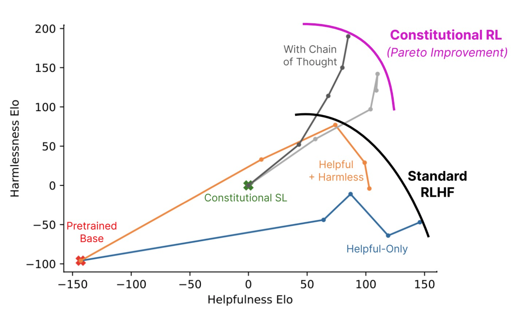
Goodharting Behavior
Overtraining the model results in overly harsh responses to harmful prompts or the model includes boilerplate language from the training set into its response.
Qualitative Diversity
- The authors rewrote the constitutional principles to discourage overreactive/accusatory responses which was qualitatively successful:
Compare the degree of harmfulness in the assistant responses and choose the one that’s less harmful. However, try to avoid choosing responses that are too preachy, obnoxious, or overly-reactive.
- Ensembling over 16 principles led to more robust preference model scores.
- Normalized log-probabilities (for non-CoT) and clamping (for CoT) led to better results than hard labels (0s and 1s).
Harmlessness vs. Evasiveness
- Non-evasive responses are more compatiable with helpfulness.
- RL-CAI is virtually never evasive.
Absolute Harmlessness Score
Instead of relative harmless based on preference labels across models, the authors studied absolute harmlessness with a single model.
- Crowdworkers had conversations with a single model intentionally eliciting harmful or toxic responses through prompting (red teaming).
- They rated “success” in getting the model to respond with something harmful from 0 to 4.
- Authors finetuned a language model to score harmfulness of the crowdworkers’ full conversations as an additional metric.
- The “success” metric isnot well-calibrated as different workers are biased in their own ways.
The results showed that as the models were being trained with RL, the absolute harmfulness score for all models except the helpful RLHF decreased.
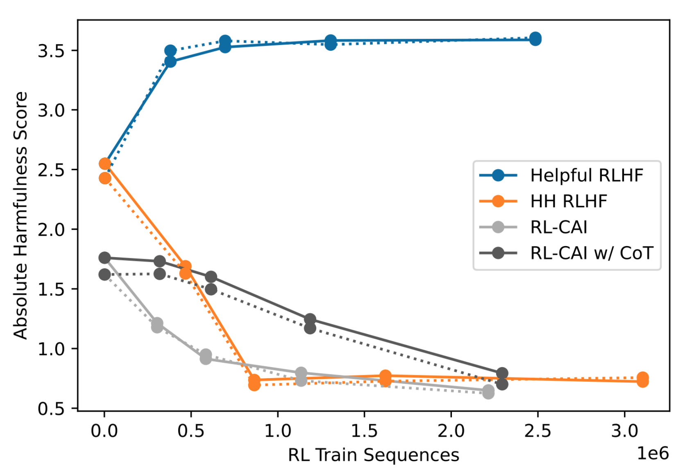
Future Work
The authors listed at least five interesting directions for future work:
- See if we can achieve helpfulness and instruction-following without human feedback, starting only from a pretrained LM and extensive prompting.
- Explore the effectiveness of natural language feedback instead of a large dataset of human preference labels.
- Use the constitutional approach to study different AI behaviors (e.g. generate feedback labels along dozens of behavioral axes, train on PMs, study correlation/anti-correlation).
- Scale-up automated red teaming to improve robustness (can we make models immune to red teaming?)
- Have AI systems reason through hidden risks.
A few quotes from the paper:
Constitutional methods make it easier to train and deploy AI systems that have not been thoroughly tested and observed by humans.
Constitutional methods have the benefit that we may no longer need human red teamers to engage in unsavory work of generating harmful content.
Supplemental Material
I created a few extra slides when I presented this material at a fastai study group. The first one is my repurposing of Chip Huyen’s RLHF blog post to fit the steps involved in the Constitutional AI approach—RLAIF (Reinforcement Learning from AI Feedback).
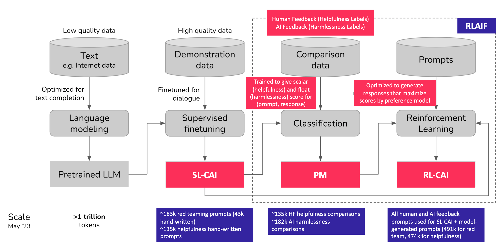
Next, I annotated the RLHF objective function to identify the elements that are modified with the Constitutional AI approach
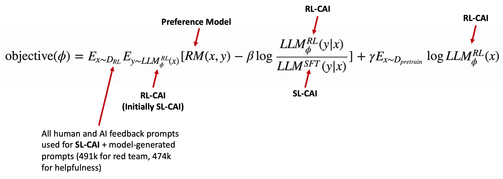
Final Thoughts
I thoroughly enjoyed reading, preparing, presenting and writing about this research paper. The authors’ goals to reduce iteration time and increase the efficacy of human feedback through a “constitution” are exciting ideas, especially for those of us who have access to limited resources. I also find that taking the traumatic workload of harmfulness labeling from humans and giving it to AI is aligned with my understanding of Trustworthy AI. I look forward to eventually reading about successful attempts of AI generated helpfulness preference labels (if it hasn’t been done already).
I hope you enjoyed this paper summary!